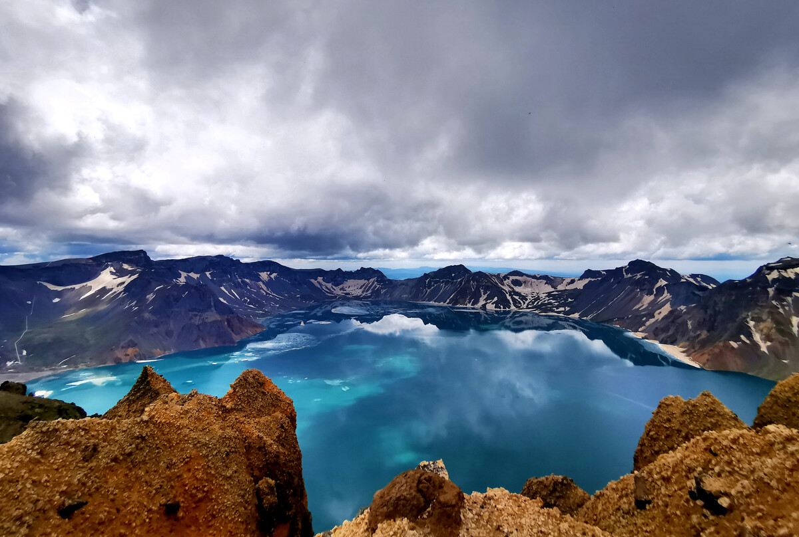
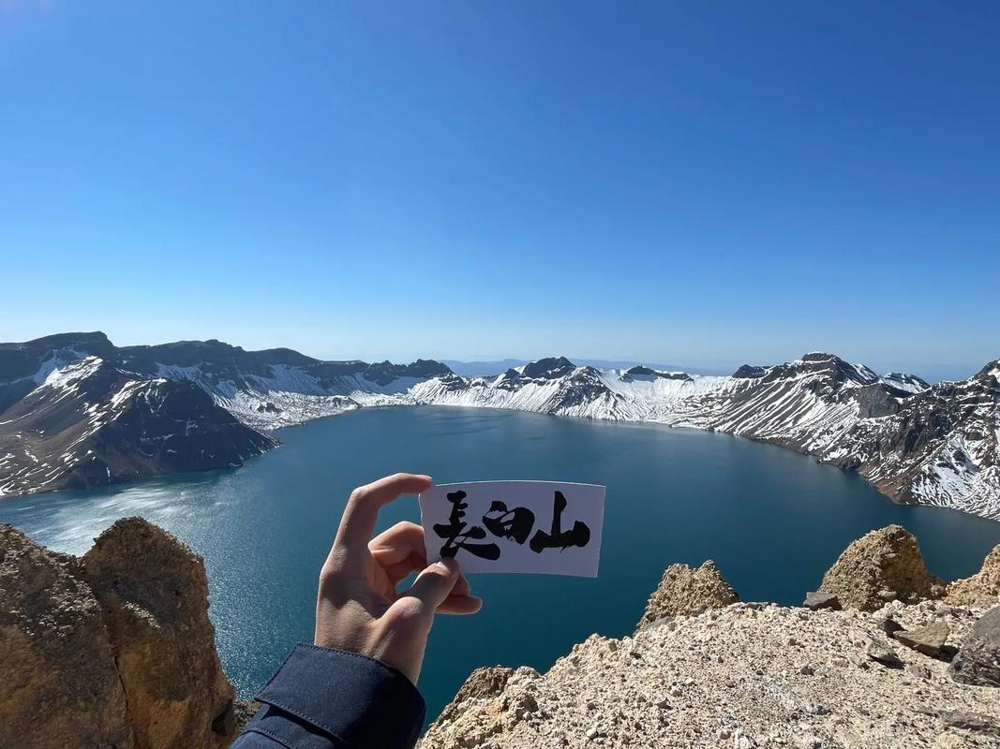

游玩指南
长白山游玩概况
长白山，位于吉林省，以其壮丽的自然风光和丰富的旅游资源吸引了无数游客。这座中国十大名山之一，拥有独特的火山地貌和四个不同坡面的美景。对于计划两日游的游客来说，以下是一些推荐的游玩项目：
第一天，您可以选择前往长白山天池，这是长白山最著名的景点之一，也是中国最大的火山湖。站在天池边，四周被十六座山峰环抱，湖面碧波荡漾，景色壮观。接着，您可以前往长白山瀑布，感受瀑布飞流直下的气势和瀑布下清凉的水帘洞。晚上，您可以选择在长白山脚下的温泉酒店放松身心，享受一次天然的火山温泉浴。
第二天，您可以根据自己的兴趣选择游览长白山的南坡或西坡。南坡以秀丽的自然风光和丰富的植被而著称，您可以在这里进行徒步探险，欣赏沿途的秀美风光。西坡则以其独特的漂流体验而闻名，您可以乘坐漂流船在清澈的河水中畅游，感受大自然的魅力。此外，长白山还有许多其他的景点和活动等待您的探索，如长白山滑雪场（如果季节合适）、参观长白山自然保护区等。
如果还有多余的时间可以根据个人兴趣和时间安排，可以选择在长白山周边的其他景点游玩，如长白山东坡（位于朝鲜境内，目前无法前往）、露水河长白山狩猎度假区等。也可以选择在长白山小镇上休闲放松，体验当地的风土人情和美食文化。长白山地区拥有丰富的野生菌和特色面食等美食，值得一试。
长白山四季皆有看点，夏季绿意盎然，秋季五彩斑斓，冬季银装素裹，春季则万物复苏。冬季的滑雪场和温泉，夏季的避暑胜地，都是不容错过的体验。
建议游客至少安排2-3天的时间来探索长白山，每条线路都值得细细品味。记得穿着适合徒步的鞋子，携带必要的防晒和防寒装备，尤其是在高海拔的天池区域。

早上：抵达与准备
交通安排：
乘坐高铁至长白山站，或者选择长白山机场或长春龙嘉机场作为飞行目的地。
自驾游客请导航至长白山北坡集散中心，避免前往旧的山门。
出发时间：
建议在早上08:30左右从酒店或集散中心出发，前往长白山北景区。
上午：景区游览
检票与环保车：
11:00-12:00，抵达景区后检票，并换乘景区环保车进入景区。
环保车每隔15分钟发一趟，沿途有多个停靠点，可以根据需要随机上车。
主峰倒站口：
抵达主峰倒站口后，可在此享受高负氧离子含量的新鲜空气，感受深山里的原始呼吸。
天池主峰：
12:00-13:00，乘景区倒站车赴天池主峰，俯瞰因火山强烈喷发而形成的高山湖泊——长白山天池。
途中可欣赏到欧亚大陆从温带到极地四个不同景色的森林植被垂直景观带。
中午至下午：继续游览
长白瀑布：
13:00-14:00，游览落差68米的瀑布——长白山瀑布，它常年流淌，冬天结冰而不冻，美不胜收。
聚龙温泉群：
欣赏中国海拔高、温度高、四季水温不变的温泉——聚龙温泉群。
绿渊潭：
14:00-15:00，游览宁静幽深的绿渊潭景点。
返回与结束：
15:00-15:30，乘坐景区环保车返回景区山门。
15:30-17:30，乘车返回酒店或集散中心，结束一日游行程。
游玩攻略与注意事项
穿衣指数：需穿厚外套或加绒冲锋衣，山下薄外套即可。根据天气情况调整衣物。
门票与交通：提前查询门票价格和交通费用，并购买好门票和环保车票。
天气状况：只有晴天可以看到天池，建议提前查看天气预报，选择晴天出行。
食物与充电：不必带太多食物，轻装上阵。山上没有共享充电宝，请自备充电宝。
时间安排：一日游行程较为紧凑，建议提前规划好时间，避免错过重要景点。
路线1：北坡经典一日游

路线概览
长白山西坡位于白山市抚松县松江河镇地域内，是四坡中火山地貌最为壮观、最具典型的地区，也是观看天池的最佳地区。这里保留了原始秀美的自然风貌，让游客能够领略到大自然的神奇魅力。
路线分点介绍
山门至环保车停车场
乘环保大巴一路前行，沿途可见从针阔混交林到针叶林、岳桦林、低矮灌木的垂直分布林带。
仔细观察，林间可能还有可爱的小动物出没。
环保车停车场至天池
由山上的环保车停车场到山顶需要徒步900米，攀登1442级台阶。
虽然台阶数量多，但沿途风景优美，不会觉得特别辛苦。
登上观景高台，可以欣赏到天池的全貌，视野开阔、气势宏伟。
天池至中朝界碑
在天池游览完毕后，可前往中朝界碑。
界碑位于中国与朝鲜两国边界之间，游客可以驻足拍照，体验一脚踏上两国边界的感觉。
中朝界碑至梯子河
梯子河因形似层层阶梯而得名，有着上窄下宽的“梨形”身材。
河水从狭长的悬崖峭壁形成的大深谷奔流而下，河床宽仅2米左右，最窄的地方一步就可以轻松跨过。
梯子河至锦江大峡谷
锦江大峡谷长14公里，深80米，宽度在200到300米之间。
峡谷内幽谷奇峰，怪石林立，景色十分壮观。
峡谷中建有环形游览栈道，一圈下来需要近一个小时。
锦江大峡谷至王池
王池是一个椭圆形火山口湖，周围长满了乌拉草和蒲草。
平静的湖水倒映着蓝天白云和绿树森林，景色靓丽。
前往王池需经木质栈道，步行一段距离后到达。
王池至高山花园
高山花园是长白山上的“空中花园”，每年7、8两月，无数的奇花异卉争芳斗艳。
除了花朵之外，还有许多蝴蝶、蜜蜂等昆虫和小兽。
路线2：西坡探险之旅

一、行程概览
长白山南坡位于长白山池南区（漫江镇），距离北坡二道白河镇约3小时车程，距离西坡松江河镇约1.5小时。这里以原始风貌和丰富的自然景观为特色，主要景点包括长白山天池、鸭绿江大峡谷、岳桦双瀑等。
二、游玩路线
1. 出发准备
出发地点：从二道白河镇或松江河镇出发。
交通工具：建议包车或自驾，因为南坡距离较远，公共交通不太方便。
2. 到达长白山南坡景区
预计到达时间：根据出发地点，预计上午9:00左右到达。
边防检查：由于靠近边境，路上会有边防检查，请提前准备好身份证。
3. 景区游览
门票预定：南坡只在夏季开放，预计会开到十一之后。需提前在长白山公众号订票，每日零点起可定三天后的票。由于南坡每天只接待1500人，所以一定要提前订票。
游览路线：
二道白河镇（或松江河镇）出发，乘坐包车或自驾前往景区大门（约2.5小时）。
在景区大门乘坐小客车（约45分钟），前往天池主峰。
游玩天池主峰（约1小时），可俯瞰天池全貌。
乘坐小客车（约30分钟）前往岳桦双瀑。
游玩岳桦双瀑（约30分钟），欣赏二级小型瀑布及其周围风光。
乘坐小客车（约20分钟）返回景区大门。
如有时间，可沿途欣赏鸭绿江大峡谷的壮观景色（车辆慢行，游客在车内观光）。
4. 返程
离开景区后，乘坐包车或自驾返回出发地点。
三、注意事项
由于南坡每天接待人数有限，建议提前订票。
前往南坡的路上会有边防检查，请提前准备好身份证。
景区禁飞无人机，请遵守景区规定。
主峰海拔较高，请注意保暖和防晒。
景区内实行“定时、定点、定线、定量”的开放方式，请按照景区规定游览。
路线3:南坡游玩
第一天：延吉出发至长白山北坡
上午
出发：从延吉市区出发，可以选择乘坐客车（约3小时）或火车（先到安图站或白河站，再转乘汽车）前往长白山北坡。
抵达：预计上午10点左右抵达长白山北坡景区。
中午
午餐：在景区附近的餐馆享用午餐，品尝当地特色美食，如延边烤肉、石锅拌饭等。
下午
游览长白山北坡：
乘坐景区环保车前往天池主峰，沿途欣赏森林植被垂直景观带。
登上天池主峰，俯瞰天池美景，感受大自然的壮丽。
游览长白瀑布，欣赏瀑布飞流直下的壮观景象。
前往绿渊潭，感受潭水的清澈与宁静。
住宿：预订在长白山附近的酒店，如二道4钻温泉酒店，享受高质量的住宿体验。
第二天：长白山北坡至延吉
上午
早餐：在酒店享用早餐。
游览魔界漂流：体验零下30度的雪林仙境，感受刺激与宁静并存的漂流之旅。
返回延吉：结束长白山北坡的游览后，乘坐客车或火车返回延吉市区。
中午
午餐：在延吉市区品尝当地美食，如延边烧烤串、月亮糕等。
下午
延吉民俗园游览：换上韩服，体验拍照的乐趣，感受延吉的民族服饰文化。
参观延吉历史文化博物馆：了解延边的历史发展史，增进对当地文化的了解。
购物与休闲：在延吉市区逛街购物，品尝当地特色小吃，感受城市的魅力。
晚上
观看歌舞剧：如有时间，可以观看延边当地的大型歌舞剧“花开永不败”，感受浓厚的文化氛围。
注意事项
提前查询并预订好交通和住宿，确保行程顺利。
根据天气情况准备合适的衣物和用品，如防晒霜、雨具等。
注意保护环境，不随意丢弃垃圾。
尊重当地的文化和风俗习惯。
这个2天1晚的延吉长白山行程将带您领略长白山北坡的壮丽风光和延吉市的独特魅力，让您留下难忘的回忆。
路线4：延吉长白山2天1晚

第1天：哈尔滨出发
上午：从哈尔滨出发，准备行李和必要的装备，如羽绒服、雪地靴、相机等。
下午：抵达酒店后，休息调整状态，可以逛逛哈尔滨的中央大街，感受这座城市的独特魅力。
第2天：哈尔滨城市游
上午：参观索菲亚大教堂，欣赏其独特的建筑风格。
下午：游览太阳岛风景区，观赏雪雕展，体验冰雪文化。
晚上：品尝哈尔滨特色美食，如东北乱炖、锅包肉等。
第3天：哈尔滨至长白山
上午：乘坐火车或长途汽车前往长白山（火车约10小时，长途汽车约8-10小时）。
下午：抵达长白山后，入住酒店，休息调整。
第4天：长白山北坡游览
上午：乘坐景区环保车前往天池主峰，游览长白山天池。
下午：游览长白瀑布，欣赏瀑布飞流直下的壮观景象。
晚上：在酒店休息，或体验当地的温泉。
第5天：长白山北坡至西坡
上午：前往长白山西坡，沿途欣赏自然风光。
下午：游览长白山西坡的主要景点，如锦江大峡谷、高山花园等。
第6天：长白山西坡深度游
全天：继续在西坡游览，可以体验滑雪、雪地摩托等冰雪活动，或前往其他未游览的景点。
第7天：长白山至哈尔滨
上午：从长白山返回哈尔滨，途中可以选择在延吉等城市停留，游览当地景点。
下午：抵达哈尔滨后，休息或自由活动。
第8天：哈尔滨返程
上午：在哈尔滨市区自由活动，购买特产或纪念品。
下午：结束旅程，返回出发地。
注意事项：
由于长白山海拔较高，气温较低，请注意保暖，并准备预防高原反应的药物。
在游览过程中，请遵守景区规定，保护环境，不乱扔垃圾。
根据季节和天气情况，适时调整行程安排。
这个8天7晚的哈尔滨长白山行程涵盖了哈尔滨的城市风光和长白山的自然风光，既有文化体验，也有冰雪活动，希望能为您的旅行提供有益的参考。
路线5：哈尔滨长白山8天7晚

第一天：延吉出发至长白山北坡
上午
从延吉市区出发，乘坐长途汽车或包车前往长白山北坡。预计行程时间约3小时。
抵达后，先办理入住酒店手续，建议选择位于长白山北坡附近的酒店，以便更好地游览景区。
下午
前往长白山万达度假区，体验滑雪场的乐趣（如果季节和天气允许）。长白山万达滑雪场拥有43条雪道，适合不同水平的滑雪爱好者。
滑雪结束后，可前往汉拿山温泉放松身心，享受温泉的舒适与宁静。
晚上
在酒店休息，为第二天的行程储备体力。
第二天：长白山北坡深度游
上午
早餐后，乘坐景区环保车前往长白山北坡。
首先游览魔界漂流，体验刺激的漂流之旅，感受大自然的魅力。
下午
前往长白山北坡的著名景点——天池。作为中国最大的高山湖泊之一，天池被周围的山峰环绕，湖水清澈见底，景色壮丽。
随后游览长白瀑布，欣赏瀑布飞流直下的壮观景象。长白瀑布是世界上最落差最大的火山口湖瀑布，值得一看。
晚上
返回酒店休息，或选择在附近品尝当地美食。
第三天：长白山北坡自然探索
上午
前往长白山北坡的绿渊潭，欣赏潭水的碧绿与深邃。绿渊潭位于岳桦林景观带，因池水碧绿深邃而得名。
游览地下森林，感受原始森林的神秘与宁静。
下午
前往长白山野生动物园，近距离观赏各种野生动物，如狼、熊、马鹿等。同时，参与动物园的表演和互动项目，增进对动物的了解。
晚上
在酒店休息，或选择参加当地的夜游活动。
第四天：长白山北坡至延吉市区
上午
离开长白山北坡，返回延吉市区。途中可欣赏沿途的自然风光。
抵达延吉后，游览延吉的著名景点，如朝鲜民俗园、人民公园等。
下午
前往水上市场和西市场，品尝当地特色美食，购买特产和纪念品。
参观延边博物馆，了解延边地区的历史文化和民俗风情。
晚上
在延吉市区品尝当地美食，如延边烧烤、冷面等。
第五天：延吉市区自由活动及返程
上午
在延吉市区自由活动，可以选择购物、品尝美食或参观其他景点。
下午
根据返程计划，前往机场或火车站，结束愉快的延吉长白山北坡之旅。
注意事项
长白山地区气候多变，请根据季节和天气情况携带合适的衣物和装备。
游览景区时，请遵守景区规定，保护环境，不乱扔垃圾。
提前预订酒店和交通工具，确保行程顺利。
这个5天4晚的延吉长白山北坡行程将带您领略长白山北坡的壮丽风光和丰富的自然资源，同时体验延吉市区的独特魅力。祝您旅途愉快！
路线6：延吉长白山北坡5天4晚
游玩小贴士
北景区游玩建议安排一整天，约5-6小时。
提前在线预约门票，携带身份证件检票。
冬季注意保暖，携带防滑装备。
长白山地处东北，气候多变，夏季早晚温差大，建议随身携带保暖衣物，如羽绒服或轻便外套。
夏季阳光强烈，务必携带防晒霜、太阳帽和太阳镜等防晒用品。
节假日和周末是旅游高峰期，建议提前规划行程，避开高峰期以减少等待时间。
景区内设有环保车，每隔15分钟发一趟，游客可随机上车，方便快捷。
天池是长白山的标志性景点，建议早晨或傍晚前往，避开人流高峰，欣赏美景。
长白山拥有丰富的自然风光，适合徒步和摄影爱好者。但请注意安全，不要攀爬未开放区域。
长白山地区有多个温泉度假村，游客可以体验温泉养生，舒缓疲劳。
在游览过程中，请遵守景区规定，注意人身安全，不要攀爬没有安全保障的区域。
请保持景区环境整洁，不乱扔垃圾，共同维护长白山的生态环境。
长白山地区有着丰富的民俗文化和风俗习惯，游客在游览过程中应尊重当地文化。
请随身携带身份证等有效证件，以便办理入住、购票等手续。
在景区内用餐时，请选择正规餐馆，注意饮食卫生，避免食物中毒等问题。